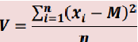

A variância possui i mesmo sentido que o Desvio Médio, que é de realizar a média da diferença entre os valores apresentados, porém utilizamos a variância pois ela possui maior precisão na realização dessa tarefa. Para realizar a Variância, devemos pegar os termos e realizar a média, após isso vamos subtrair cada termo por sua média, e o valor resultante será elevado ao quadrado. Após isso devemos somar o resultado e dividir pela quantidade de elementos que foram inseridos.
Podemos dar como fórmula da variância:

Sendo x o elemento, M a média e n a soma da quantidade de elementos. Observe a execução abaixo:
Justificativa: A escolha da Variância em estatística é pelo grau de dependência para realizar os cálculos. A cada passo que você avançar, necessariamente precisa ter feito outra conta que depende do resultado, para prosseguir. Também porque a variância foi o para mim a parte mais complexa de estatística, na efetuação das contas.
Erechim
2022